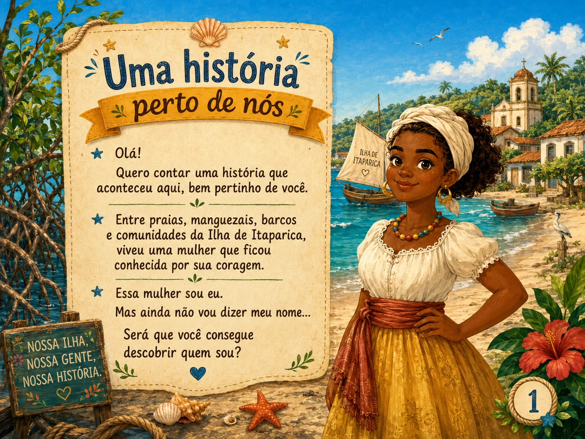
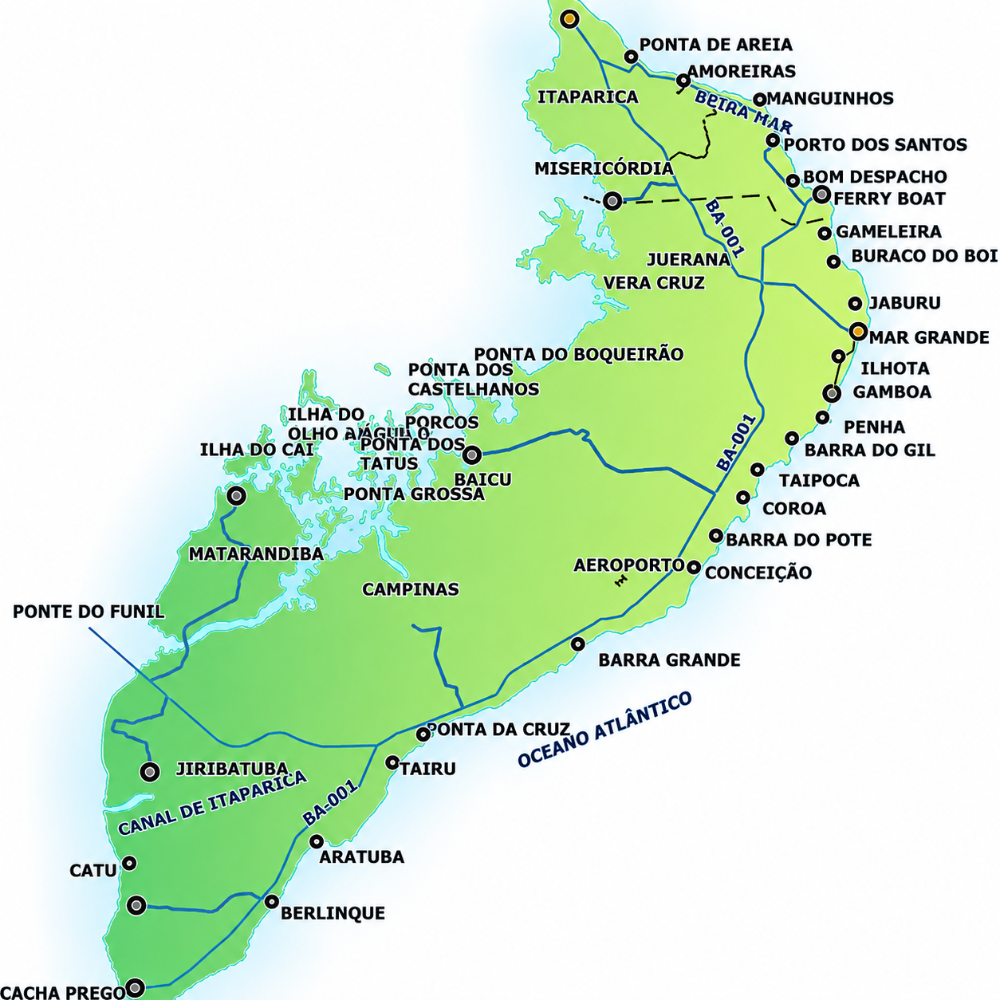

MISSÃO APRENDER · PLATAFORMA EDUCATIVA INTERATIVA
17
atividades interativas
3
níveis
100%
gratuito
Cada matéria vira uma aventura jogável.
História, Matemática, Geografia, Português e Ciências em desafios rápidos, com uma missão especial sobre Vera Cruz e a Ilha de Itaparica.
ESCOLHA E JOGUE
Central de jogos
Os jogos ficam organizados aqui. Toque em um card e apenas a atividade escolhida será aberta.
SEU PERFIL
Como você quer aparecer?
Digite seu nome para acompanhar as pontuações dos jogos neste navegador.
HISTÓRIA DA NOSSA TERRA
Vera Cruz e a Ilha de Itaparica
Antes de aparecer nos mapas como município, Vera Cruz já fazia parte de uma história marcada pelos povos Tupinambás, pelo mar, pela formação de antigos povoados, pela religiosidade e pela luta por autonomia política.
Povos Tupinambás
A Ilha de Itaparica já era habitada e possuía histórias, conhecimentos e formas próprias de viver.
Presença portuguesa
A ocupação portuguesa se fortaleceu na ilha, transformando o território e a vida de seus habitantes.
Povoado do Senhor da Vera Cruz
Foi fundado um povoado com a invocação do Senhor da Vera Cruz, origem histórica do nome municipal.
Igreja do Nosso Senhor da Vera Cruz
A fundação da igreja reforçou a importância religiosa e comunitária do antigo povoado.
Primeira freguesia da ilha
A freguesia reunia igreja, moradias, ruas, comércio e serviços, funcionando como uma antiga centralidade.
Emancipação de Vera Cruz
Vera Cruz tornou-se município, com Mar Grande como sede e uma administração própria.
Uma história cercada pelas águas
O mar participa da paisagem, do trabalho, das travessias e da memória das comunidades da ilha.
Fé, patrimônio e memória
Igrejas, ruínas e antigos povoados ajudam a contar diferentes períodos da formação de Vera Cruz.
Uma conquista política
A emancipação foi resultado de mobilização, articulação política e desejo de administrar as necessidades locais.
DESAFIO ESPECIAL
Missão da Ilha: você conhece a nossa história?
Escolha o nível, responda aos desafios e descubra quanto já sabe sobre Vera Cruz e a Ilha de Itaparica.
LIVROS · BIOGRAFIAS INTERATIVAS
Quem sou eu?
Escolha um personagem e abra o livro infantil interativo.
HISTÓRIA · LIVRO INTERATIVO
Quem sou eu?
Folheie o livro diretamente na página. Use as setas, arraste no celular ou escolha uma página no marcador abaixo.
📖
Flipbook
23 telas

Capa · 1 de 23
Dica: no computador, use as teclas ← e →. No celular, deslize a página para o lado.
HISTÓRIA · LIVRO INTERATIVO
Quem sou eu? Maria Felipa
Folheie o livro diretamente na página. Use as setas, arraste no celular ou escolha uma página no marcador abaixo.
📖
Flipbook
20 telas

Capa · 1 de 20
Dica: no computador, use as teclas ← e →. No celular, deslize a página para o lado.
GEOGRAFIA + HISTÓRIA LOCAL
Mapa-jogo da Ilha de Itaparica
Explore as comunidades, observe a posição de cada lugar e depois enfrente o desafio de localização. Sua pontuação fica registrada na seção Meu progresso.

Mapa ilustrativo para exploração educativa da Ilha de Itaparica. Os marcadores representam posições aproximadas das localidades.
Explore
Observe os nomes, clique nos pontos e conheça a posição das localidades.
Localize
O jogo apresenta um lugar e você precisa encontrá-lo no mapa.
Registre
A pontuação é salva junto aos demais resultados da página.
HISTÓRIA LOCAL · QUEBRA-CABEÇAS
Escolha qual imagem montar
Agora você pode escolher entre seis imagens de Vera Cruz para montar online.
HISTÓRIA LOCAL · PATRIMÔNIO DE VERA CRUZ
Quebra-cabeça online da Igreja Nosso Senhor da Vera Cruz
Você arrasta cada uma até o tabuleiro e ela só encaixa quando chegar ao lugar correto.
Computador: arraste a peça até o lugar correto. Celular: arraste com o dedo ou toque na peça e depois no espaço do tabuleiro.
HISTÓRIA LOCAL · PATRIMÔNIO DE VERA CRUZ
Quebra-cabeça online da Capela do Jaburu
Arraste cada peça até o tabuleiro. Ela só encaixa quando chegar ao lugar correto.
Computador: arraste a peça até o lugar correto. Celular: arraste com o dedo ou toque na peça e depois no espaço do tabuleiro.
SÍMBOLOS DE VERA CRUZ · QUEBRA-CABEÇA
Quebra-cabeça online da Bandeira de Vera Cruz
Arraste as peças da bandeira até o tabuleiro. Elas só encaixam quando chegam ao lugar correto.
Computador: arraste a peça até o lugar correto. Celular: arraste com o dedo ou toque na peça e depois no espaço do tabuleiro.
PATRIMÔNIO RELIGIOSO · QUEBRA-CABEÇA
Quebra-cabeça online da Igreja Sagrado Coração de Jesus
Arraste as peças da igreja até o tabuleiro. Elas só encaixam quando chegam ao lugar correto.
Computador: arraste a peça até o lugar correto. Celular: arraste com o dedo ou toque na peça e depois no espaço do tabuleiro.
PATRIMÔNIO HISTÓRICO · QUEBRA-CABEÇA
Quebra-cabeça online do Forno da Penha
Arraste as peças do Forno da Penha até o tabuleiro. Elas só encaixam quando chegam ao lugar correto.
Computador: arraste a peça até o lugar correto. Celular: arraste com o dedo ou toque na peça e depois no espaço do tabuleiro.
FÉ E CULTURA POPULAR · QUEBRA-CABEÇA
Quebra-cabeça online do Bom Jesus da Gamboa
Arraste as peças da imagem do Bom Jesus da Gamboa até o tabuleiro. Elas só encaixam quando chegam ao lugar correto.
Computador: arraste a peça até o lugar correto. Celular: arraste com o dedo ou toque na peça e depois no espaço do tabuleiro.
GEOGRAFIA · REGIÕES BRASILEIRAS
Quebra-cabeça das Regiões do Brasil
Antes da partida, observe o mapa completo. Ao clicar em Iniciar jogo, as cinco peças sairão do mapa. Ficará apenas a silhueta do Brasil, sem linhas internas. Leve cada região ao lugar correto para que ela se encaixe.

Computador: arraste a peça. Celular: toque na peça e depois toque no mapa.
MISSÃO CONCLUÍDA
Brasil montado!
Resultado final
100
pontos
CONTINUE APRENDENDO
Estados e capitais
Comparação regional
Bahia no mapa
Escolha uma região e liste seus estados e capitais.
Compare clima, vegetação, cultura, população e atividades econômicas.
Localize a Bahia, identifique o Nordeste e relacione o conteúdo a Vera Cruz.

GEOGRAFIA · ESTADOS DE CADA REGIÃO
Quebra-cabeça das regiões, uma por uma
Além do desafio de montar o Brasil por regiões, agora também é possível jogar separadamente em cada região. Escolha uma aba, observe os estados encaixados e depois clique em Iniciar jogo para montar a região novamente.
Computador: arraste a peça. Celular: toque na peça e depois toque no lugar em que ela deve encaixar.
MISSÃO CONCLUÍDA
Região montada!
Resultado final
100
pontos
CONTINUE EXPLORANDO
Estados e capitais
Comparação
Pesquisa orientada
Depois de montar a região, liste os estados, capitais e siglas.
Compare relevo, clima, vegetação, cultura e atividades econômicas entre as regiões.
Escolha um estado para pesquisar curiosidades, bandeira, população e manifestações culturais.
ESCOLHA SUA MISSÃO
Qual jogo você quer explorar?
Cada partida apresenta desafios variados. Errar não encerra o jogo: a resposta correta aparece e o erro se transforma em pista.
História
Povos antigos, Brasil, cultura, fontes históricas e história local.
Matemática
Operações, problemas, frações, porcentagem e lógica.
Geografia
Mapas, paisagens, clima, população e orientação espacial.
Português
Interpretação, ortografia, classes de palavras e sentidos do texto.
Ciências
Corpo humano, ambiente, seres vivos, matéria e universo.
CONFIGURAR PARTIDA
Sua missão
Disciplina
Missão do conhecimento
Pergunta 1 de 5
0 pontos
00:00
Pergunta
ACOMPANHAMENTO
Meu progresso nos jogos
| Participante | Categoria | Jogo | Tema | Acertos | Pontuação | Data |
|---|---|---|---|---|---|---|
| Nenhum jogo concluído ainda. | ||||||
MISSÃO CONCLUÍDA
Resultado
0%
0 de 0 acertos